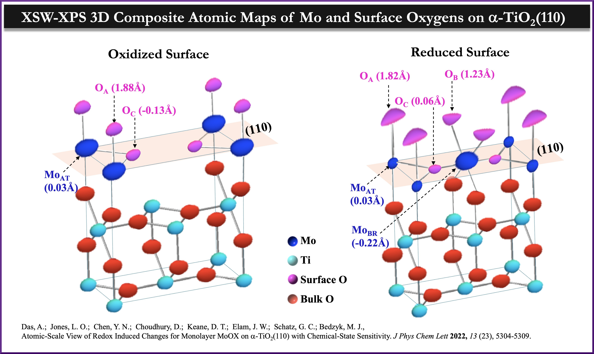

HOME
BEDZYK
MEMBERS
RESEARCH
EQUIPMENT
PUBLICATIONS
LINKS
Research Highlights
(1/4)

(2/4)
(3/4)
(4/4)
❮
❯
Latest Headlines:
Congratulations to Joey for successfully defending his thesis!
Congratulations to Roger for winning 3rd place at the Hilliard Symposium!
Congratulations to Elise for successfully defending her thesis!
Congratulations to Anusheela for successfully defending her thesis!

![Electrostatic control of assembly of chiral amphiphiles. Charged chiral molecules are abundant in nature. Prime examples are the amino acids. Efficient packing of chiral molecules requires that the neighbors exhibit a twist with respect to each other, leading to helical structures. Here, we show that the nature of the ionic environment determines the type of helical assembly, with weak long-range electrostatic interactions leading to helical ribbons and short-range leading to cochleate. Figure: Chiral amphiphile C-16 Lysine. Approach: The assembly of charged chiral amphiphile C-n K-1 is examined as a function of sodium chloride and sodium hydroxide concentration from nano to meso scale using a combination of in-situ AFM, cryo-TEM, circular dichroism and solution SAXS/WAXS. The molecules assemble into planar, interdigitated high-aspect ratio, tilted, crystalline bilayer ribbons. With a charge in ionic environment, the crystallinity in bilayers reduces and bilayers twist. Depending on whether the change tunes the charge (added sodium hydroxide (increased pH)) or screens the charge (added sodium chloride), the bilayer ribbons form helical ribbons or helicoidal cochleate. McCourt et al., ACS Central Science, 2022.](graphics/Joey_poster_section_2022.jpg)
![Ion adsorption at charged solid-aqueous interfaces. Figure: Reflectivity and best-fit electron density profile of the graphene/silicon carbide/rubidium chloride interface. Capacitive energy storage is driven by adsorption of ions at an electrode-electrolyte interface. In-situ X-ray reflectivity (XR) and anomalous XR can help elucidate the adsorbed ion structure and underlying phenomena that give rise to observed structures. Direct, quantitative comparison between X-ray reflectivity and theory highlights important structural differences between the two methods and helps guide further development of predictive computational tools. Figure: Experiment vs. theory for the aluminum (II) oxide-water interface. K. J. Harmon, Y. Chen, E. J. Bylaska, J. G. Catalano, M. J. Bedzyk, J. H. Weare, P. Fenter. Insights on the Alumina-Water Interface Structure by Direct Comparison of Density Functional Simulations with X-ray Reflectivity. Journal of Physical Chemistry C 122, 26934-26944 (2018)](graphics/Kathy_slide4.png)
![Interparticle Interactions in Concentrated Electrolytes. Figure: Calcium 2+ ions induce crystallization. Dissolved ions act as mediators of electrostatic forces in aqueous systems. Ions can induce exotic behavior, such as attractions between like charges. Small-angle X-ray scattering (SAXS) is utilized to investigate the crystal symmetries and effective particle separations of DNA-functionalized gold nanoparticles assembled in divalent salt solutions. Figure: Crystal structure changes with salinity. Increasing the solution ionic strength changes the lattice type from FCC to BCC, eventually eliminating long-range order. The nearest-neighbor distance in the assemblies initially decreases with calcium chloride concentration (expected from classical theory), but eventually reaches a minimum and begins to increase. Figure: Extraction of Effective Particle Sizes. Currently: Roger Reinertsen (PhD student) and Sumit Kewalramani (Research Assistant Professor)](graphics/Roger_poster_section_2022.jpg)